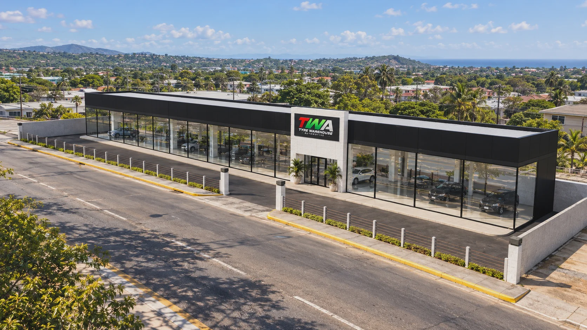
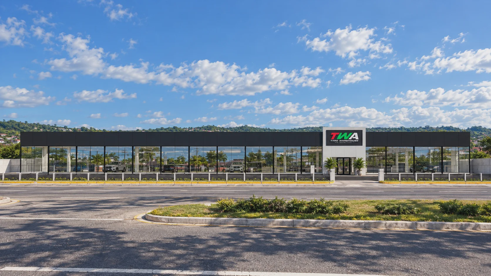
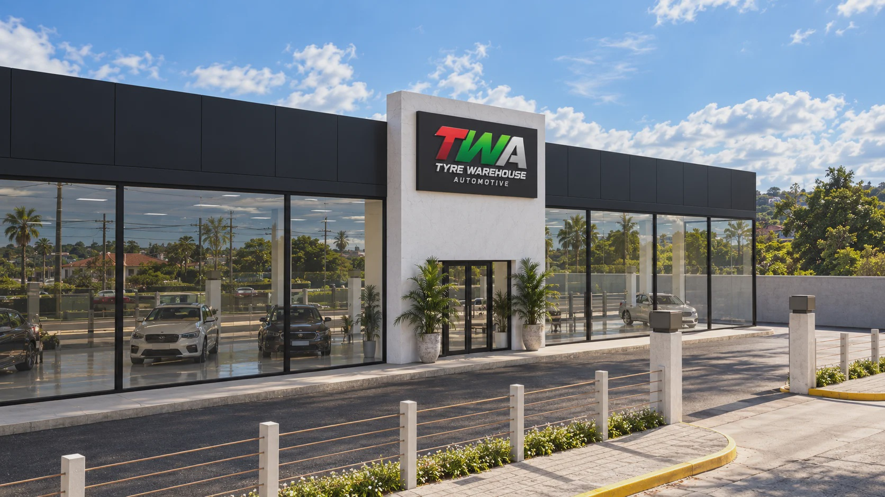
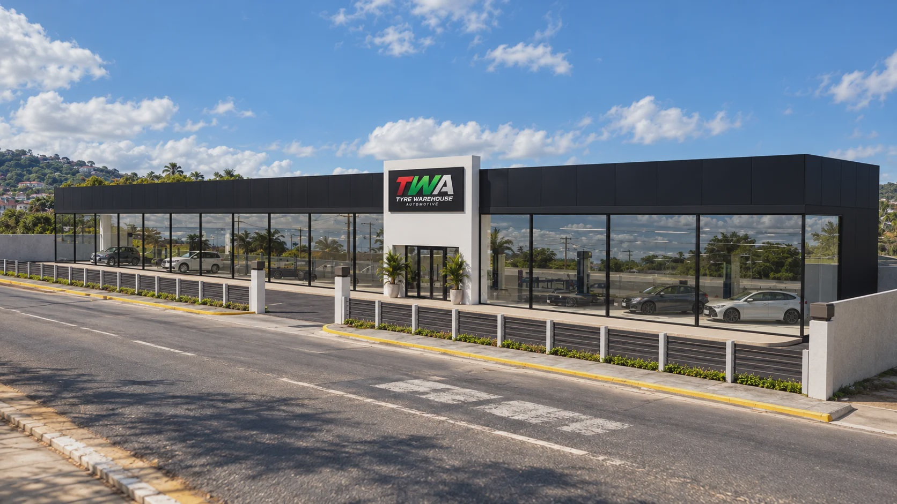
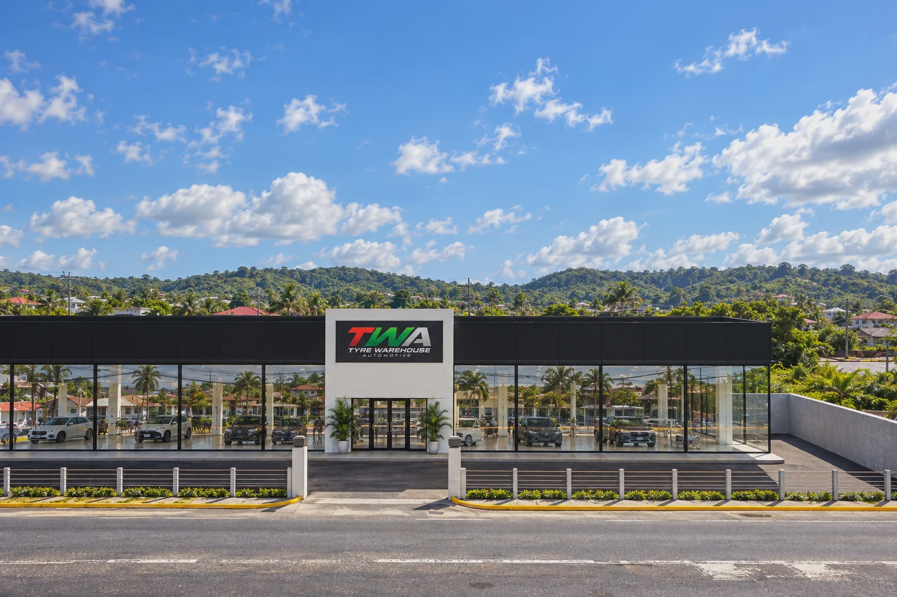

Service bays → display gallery
Repurpose the existing workshop footprint into a vehicle-focused customer environment.
Architectural transformation · Concept presentation
From tyre service centre to a contemporary automotive showroom. A new retail experience for TWA.
01 / The transformation
The proposal reimagines the existing Tyre Warehouse service-centre frontage as a unified automotive retail environment, replacing working service bays with dedicated vehicle display space.
An uninterrupted glazed façade, refined black cladding and a central branded entrance give TWA a clear architectural identity while allowing the vehicles to become the focus.
Concept visuals communicate design intent. Site dimensions, structural retention, compliance and final specification are subject to detailed design and verification.

Repurpose the existing workshop footprint into a vehicle-focused customer environment.
Continuous glazing and a restrained black-and-white architectural palette establish a stronger street presence.
A central entry and clear branding place the automotive business at the forefront of the experience.
02 / Proposed design
Five proposed views explore the showroom's architectural language, vehicle display frontage and relationship to the street. Select any image to view full size.





03 / A new presence on Old Hope Road
A considered transformation of an established automotive location into a distinct vehicle sales destination—built around visibility, presentation and brand recognition.